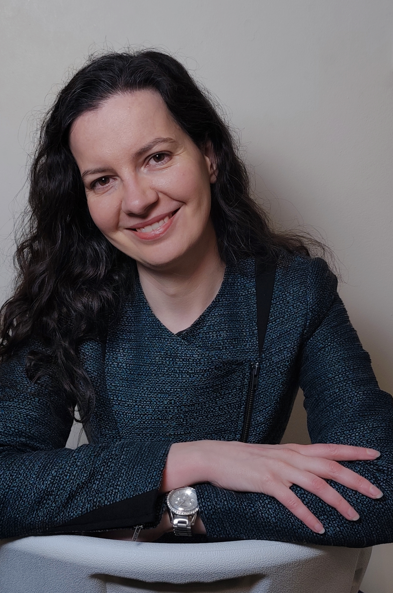

Identity
Notice your self-image, inner voice and familiar beliefs.
A gentle, practical way to make space for yourself, notice what matters, and bring your intentions into everyday life.

I created Small Moments Method to bring together two things that have mattered throughout my life and work: wellbeing and the quiet, everyday choices through which we grow. I wanted to create a practice that feels human and realistic — something that can fit into an ordinary day, without asking anyone to transform their life overnight or get everything right.
I hold a Master’s degree in Physiotherapy and have spent more than 20 years working in different spa and wellness settings, with a focus on people’s wellbeing. Throughout those years, I have met people at moments when they want to feel better, find balance, regain confidence, or move towards a version of themselves they hope to become. Listening to their needs and ambitions has taught me that the desire for change is deeply human — but knowing where to begin can be the hardest part.
That is the thinking behind Small Moments Method. Lasting change does not have to begin with a dramatic decision or a perfect plan. It can begin with a small moment of awareness: pausing long enough to hear yourself, choosing what matters, imagining a meaningful direction, and taking one practical step. The method is designed to help turn the wish to grow into a gentle, repeatable daily practice — with room for real life, setbacks, and starting again.
The 90-day programme is divided into four stages. Each has a different focus, while the daily practice stays simple and familiar.
Notice your self-image, inner voice and familiar beliefs.
Clarify what matters to you and the direction you want to take.
Examine beliefs, separate facts from interpretations, and consider other responses.
Bring your chosen direction into everyday choices and small actions.
The method offers a structure for reflection and practice, not a promise that thinking alone can make events happen. Attention can influence what we notice; our choices and repeated actions help shape what we do next.
Use the workbook to write by hand after each practice. Handwriting creates a pause for thought, helps you put vague feelings into words, and gives you a record you can return to as your perspective changes. You do not need to fill every page or write perfectly; a few honest lines are enough.
My thinking has been influenced by many books, teachers and perspectives, including Power vs. Force by David R. Hawkins, Think and Grow Rich by Napoleon Hill, Psycho-Cybernetics by Maxwell Maltz, and the work of Dr Joe Dispenza, Zig Ziglar, Tony Robbins and Peter Sage — among many others. Their approaches are different, and I do not see them as saying exactly the same thing. What stayed with me was the invitation to explore how our beliefs, self-image, attention and repeated choices may shape the way we experience life.
For years, I read these ideas and tried to understand what they really meant. Gradually, something clicked. I came to believe that meaningful change begins not only with goals or effort, but when our understanding of who we are starts to change. We then bring that new understanding into everyday life through our choices and small repeated actions.
This understanding became one of the foundations of Small Moments Method. I wanted to turn an abstract idea into a gentle, practical process: pause, choose what matters, imagine the direction you want to move in, and take one small step in ordinary life. Not because imagination guarantees an outcome, but because how we see ourselves can influence what we try, what we notice and how we act.
And of course, knowing something and putting it into practice are not always the same. Sometimes it is easier to understand an idea than to live it. It can take time to recognise just how much our self-image — and the way we speak to ourselves — shapes the way we experience life and respond to its challenges.
Change is not easy. Everyday responsibilities and challenges can take up so much of our attention that we keep putting ourselves off until later — when things are calmer, when we have more time, when everyone else is taken care of. But we matter in the middle of ordinary life, too. Small Moments Method is an invitation to make a little space for yourself now, without expecting perfection or asking yourself to change everything at once.
You can move at your own pace. A missed day does not erase your effort, and there is no need to perform the practice perfectly. This is a personal reflection tool, not therapy or medical advice. Take what is useful, adapt the words so they feel honest, and let small actions count.
Ready to begin with one small moment?
Return to the practiceLast updated: 4 October 2026